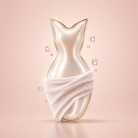

Técnica Japonesa da ToalhaAssista até o fim: por que a sua cintura foi empurrada pra frente, e o ajuste da Técnica Japonesa da Toalha pro seu tipo de barriga.
🔊 Confira se o som está ligado
Plano completo da Técnica Japonesa da Toalha
pagamento único · acesso na hora no celular
O que você recebe
- 1O seu plano de 21 dias, com o ajuste do seu tipo de barriga: o seu ajuste
- 2As 3 fases do Reencaixe Japonês: Reencaixe, Cinto Natural e Desinflamar
- 3Vídeos curtinhos de cada passo, pra fazer junto, em menos de 10 minutos por dia
- 4Diário da fita métrica, pra acompanhar a sua cintura semana a semana
- 🎁Bônus: Drenagem de 3 minutos · Postura do sofá e do trabalho · Chá desinchar
Porque o vídeo que você viu foi feito pro corpo de outra pessoa. A toalha, o ponto e o que vem depois dos 5 minutos mudam de uma mulher pra outra. No seu plano, tudo já vem ajustado pro seu tipo de barriga.
Se não gostar, devolvemos 100% do valor. Basta um pedido, sem burocracia.
Perguntas frequentes
Preciso comprar alguma toalha especial?
Não. Você usa uma toalha que já tem em casa. No plano você vê qual delas serve pro seu tipo de barriga.
Quanto tempo por dia?
Menos de 10 minutos, em casa, no horário que for melhor pra você.
Tenho dor nas costas. Posso fazer?
O plano tem adaptações pra quem sente desconforto. Se você tem hérnia de disco, fez cirurgia recente ou está grávida, converse com seu médico antes de começar.
Já tentei vendo vídeo e não funcionou. Por que agora seria diferente?
Porque o seu plano não é um vídeo genérico: ele vem com o ajuste do seu tipo de barriga e com as 3 fases completas, não só a toalha.
Como recebo o acesso?
Na hora. Você paga e o acesso chega no seu e-mail. É só abrir no celular.